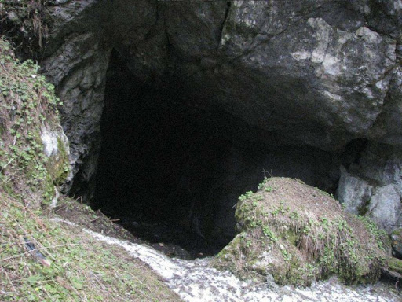

|  |
Само едно поточе дели пещерата от черния път, но избелялата табела е скрита в храсталаците и кара
туристите да се лутат. Ледницата е дълга 1525м, но достъпни за посетителите са само около 100-тина метра. Интересните ледени
образувания през по-голяма част от годината са дали името на пещерата. Входът на пещерата е тесен, но предверието е голямо и прилича на
олтар с висок таван. Оттук по естествените стъпала се слиза на около 7м до голямата площадка. Малките тераси са украсени с прозрачни
куполи, големи сталактити и сталагмити.
|